Abstract
This is a project is a 2 dimensional ray tracer using ray marching. In the class, we went over rasterization and ray tracing, which are both approaches to render 3D scenes onto a 2D screen. Ray marching is a category of ray tracing that instead of analytically calculating where on an explicit surface a ray might hit, ray marching advances the ray (from the origin) to its direction based on how far the end point is from any objects in the scene. What makes ray marching so powerful is that all geometry needs only to be defined by a signed distance function to be render to any arbitrary precision. This allows ray marching to render complex geometric objects that would be otherwise impossible to render using ray tracing. Calculating normals are also easy as you can take the gradient of a small step and take the normal from that. I also implemented spectral ray marching, which gives different colored rays a different index of refraction so that they bend differently around edges and give the rainbow colors when refracting out of a surface.
Watch the Video!Technical Approach
This project is written in C++ with the GLM math library and SFML library purely to creating the GUI window, draw pixels, lines, spheres, and take screenshots.2D Ray Marching
Ray marching is a technique where find the intersection implicitly by advancing the ray in its direction appropriately until we can only advance by so little distance.
|
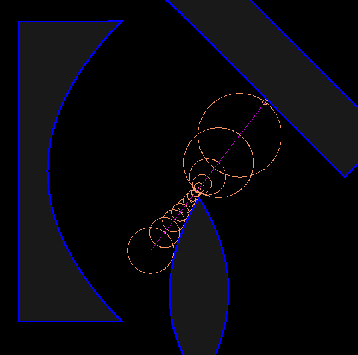 |
As seen above, from the left most red point where we start marching, we calculate the distance to the closes surface and the sphere of radius of that distance is a safe bounce for our ray to advance. So we march the ray in its direction the radius amount, and we do it again iteratively. We might get close to a surface and our distance to it becomes small, but we only terminate the marching iteration when we have reach a point where it's really really close to a surface, which we might as well interpret as a hit.
This is really powerful because we can add, and, and invert any arbitrary geometry using simple min, max, and negate operations on the distances. If there are two primitve geometries and we want to render the intersection of them, the distance function to the scene would be the max of the distance functions of the two geometries.
|
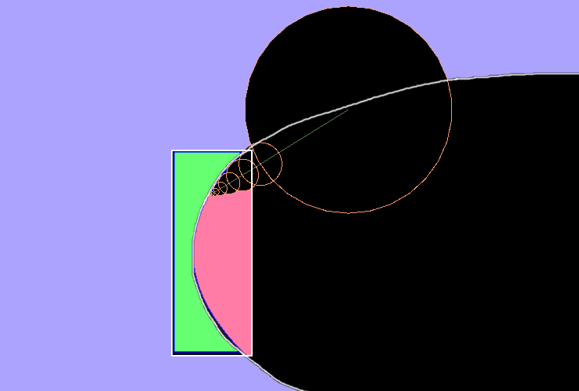
|
For the picture above, blue is the inside of the parabola, pink is the inside of the rectangle, and green is the inside of both. The distance of ray from the scene is the max of both distances. The first circle's radius is of the distance to the box because it's further. And as it got close to the box, the radius is getting sampled from the parabola because it's further. Just a note here, any positive distance is further from a negative distance.
As illustrated in figure 1, if we take the min of all the geometries, we would have what's traditionally know as a scene of all the objects. The ray marches sampling the closes to distances until the it reaches a minimum threshold.
The one-sided parabolic lens shown above is created using a similar technique. The parabola treats the concave (upper) area as inside, and this is where the signed distance function becomes useful. By inverting the distance of the parabola, we would've have flipped it inside out, treating the convex area as the inside of the parabola with the same magnitude. Thus the lens composition is just the max of the inverted parabola and the rectangle.
As for the background scene, I just, for every pixel, transformed the point from screen space to scene space and return the color depending on it's distance the the scene's objects. If it's really close a curve, I color is blue, which create the outline effect, and if it's negative, that means we're inside the object and I colored it light gray.
|
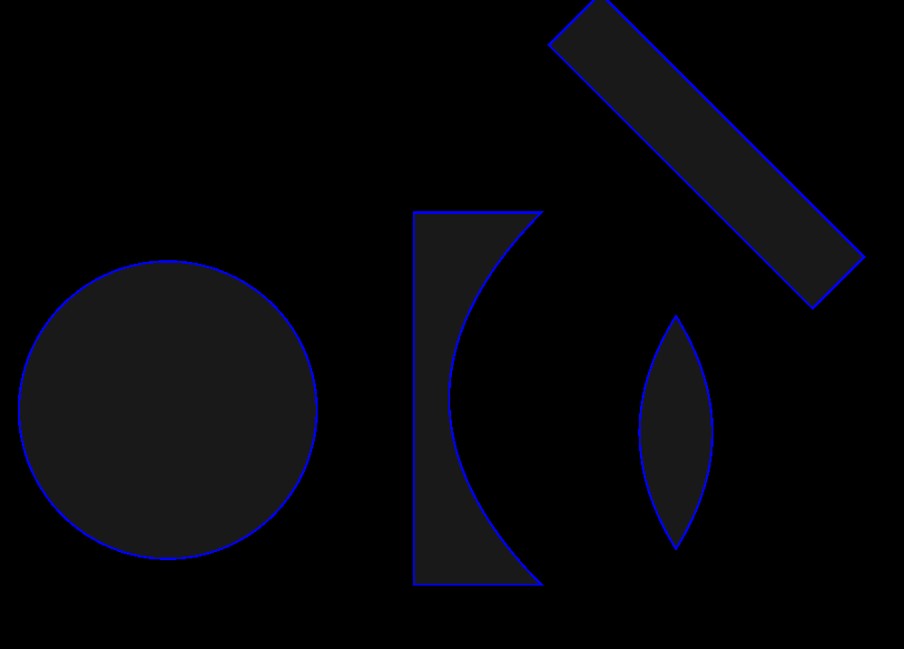
|
Taking the Normal
The normal can be calculated as follows.
| 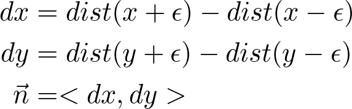 |
The above formula calculates gradient of the curve and that will be mathematically equivalent to the normal vector. Now as this calculation is just an approximation, the smaller the epsilon, the more accurate theoritically, but maybe less accurate computationally since floting point number have only so many bits of precision.
This approach is also very powerful because it does not require anything more than the signed distance function, so we can calculate all surface normals still using just the signed distance function.
| 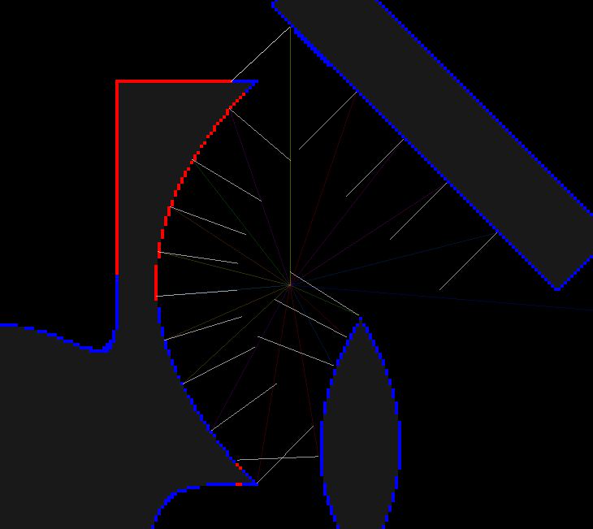 |
The result is much better than what I was expecting. I thought there would be subtle glitches in the normal directions due to precision and possible random scaterring around sharp corners but they we very legit!
Colored Rays
For colored rays, I used a wavelenth variable that corresponded to a color when drawn out. I just used an approximation and put wavelengths into bins, and interpolated their color accordingly. To demonstrate rainbow refraction, I gave each ray a different index of refraction according to its wavelength. I used a linear wavelength to index of refraction forumla, shorter the wavelength, smaller the index of refraction.
|
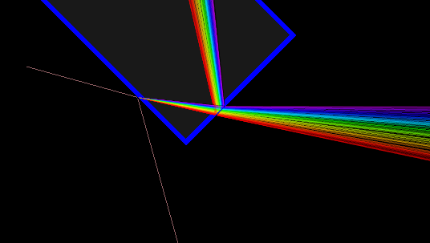
|
Problems
Transformations
So what I thought of before realizing was I could just write the distance function for a unit primitive (sphere, square, unit parabola) and to transform them, we would just keep a world-to-local matrix for each object apply that to the point we want to the distance from and use that distance in the unit object's local space. This works well if all we're doing is just rotating and translating the object, but what I noticed was when I scaled my parabola, the outline wasn't uniform in width like it should have.
|
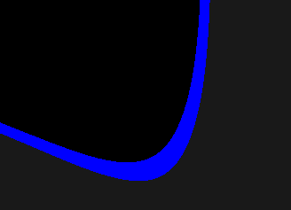
|
This was because when I scaled the object, the distance in local space is different from if we were in world space. So I thought I could get away with just keeping track of the displacement as a vector to the closes point and transfrom the displacement so that the distance is consistent in world space. But that doesn't work either because the closes point in local space isn't necessarily the closes point in world space.

|
To remedy this phenomenon, I worked around it. Instead of relying on unit primitive distance function, I added paramters to the primitives and generalized the distance function to take those paramters into account. So for a parabola, I incorporated a magnitude term, for the square, I incorporated the width and height ratio, and the distance functions were modified to reflect those parameters. Finally, I made sure the world and local transformation matrix does not scale (only translate and rotate).
Color Blending
For the library I used, SFML, I was limited to drawing lines using 8 bit colors. So I wasn't able to draw too many light rays where the alpha is less than 1/255. This meant that if there are more than 255 rays focused at path of screen space, newer rays would start drawing over old rays.
| 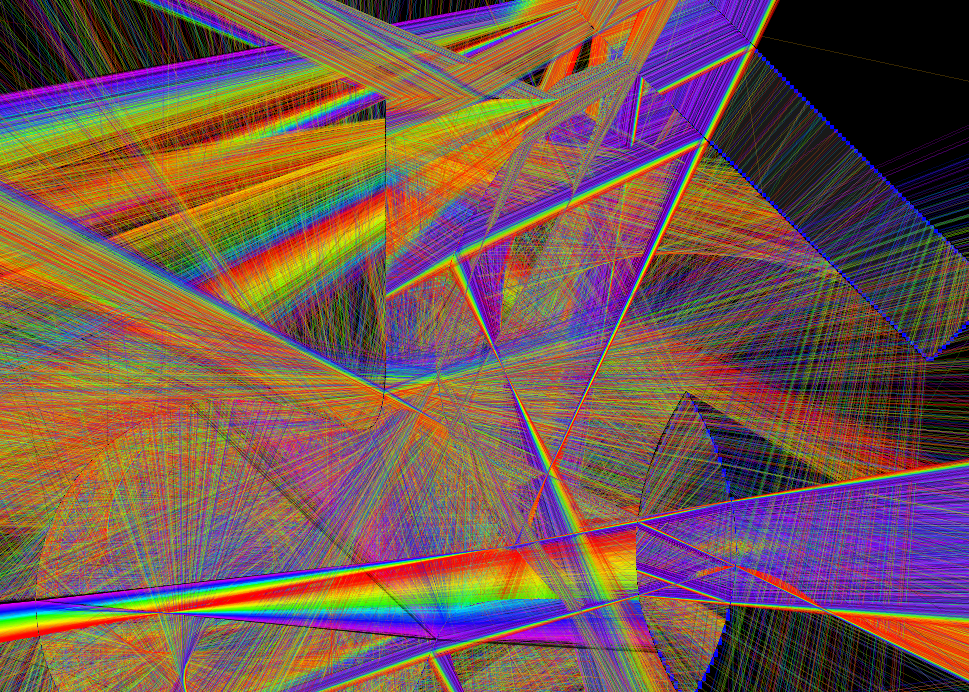 |
The more rays casted, the more the effect is pronounced. The above is an contrived case where the alpha is 25/255 at 3000 rays to recreate this effect while saving computation; as seen, the light rays are scattering over everything in such a way that it isn't apparant where the rays were coming from or going to. The caustics are also unfortunatly overdraw too. This demonstrates the limitations of the GUI library I used.
I wasn't able to solve this as the only abstraction to drawing lines required 8 bit colors, and I wasn't able to figure out how to modify the frame buffer so that I can edit the color values. So, I just used the minimum alpha value of 1/255 and be conservative of my ray count. The results were still great though.
What I Learned
For my ray marcher in general, I would increase the precision of the program to using double precision globally instead of float. This would help with really big scenes and we want precise normals so our reflections and refractions look more distributed and rich.
I think the main lesson I learned is that ray marching so just too over powered. It promises arbitrary pricision of renders of ANY curve/surface where there exists a signed distance function from any arbitrary point. I can see why this is a technique that's irreplacible compared to trandition ray tracing especially in CADing software where the program needs to render a 3D objects that's implicitly defined and potentially nestly composed in such a way that ray tracing is completely impractical.
Mind Blowing Results!
| 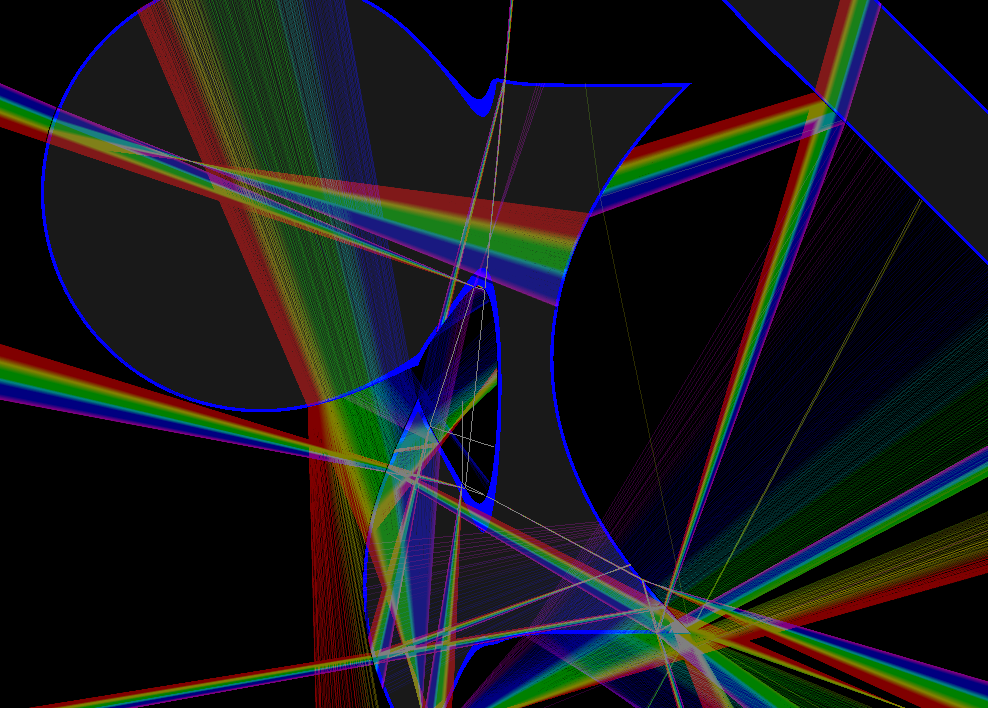 | 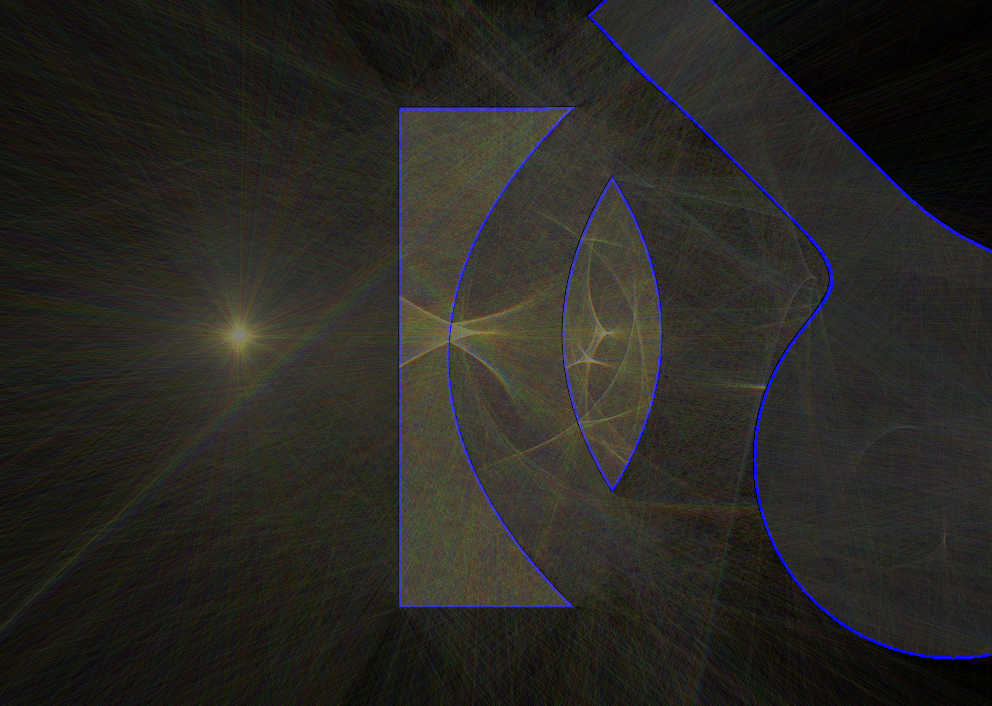 |
| 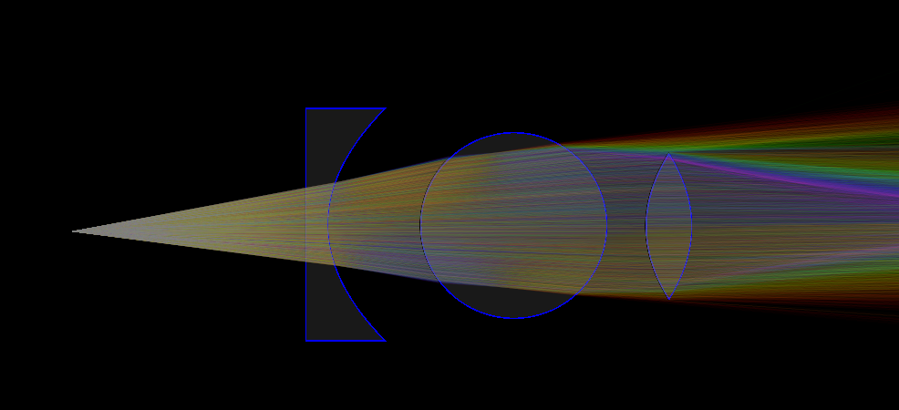 | 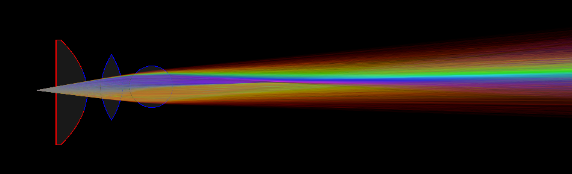 |
|
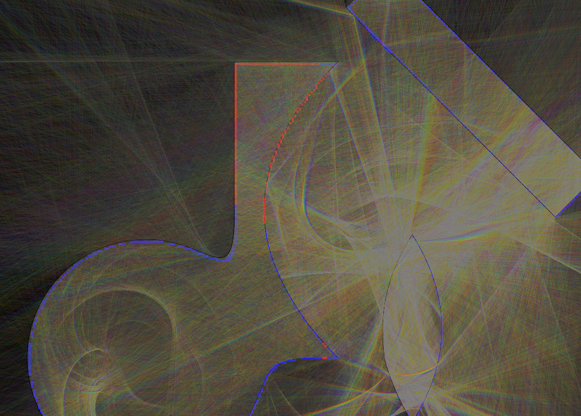
|
You may have noticed that the geometries in some of these images are kind of weirdly morphed. I used the follow function to mix the geometry and this is what happened!
|
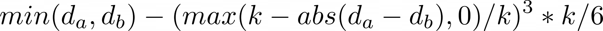
|
|
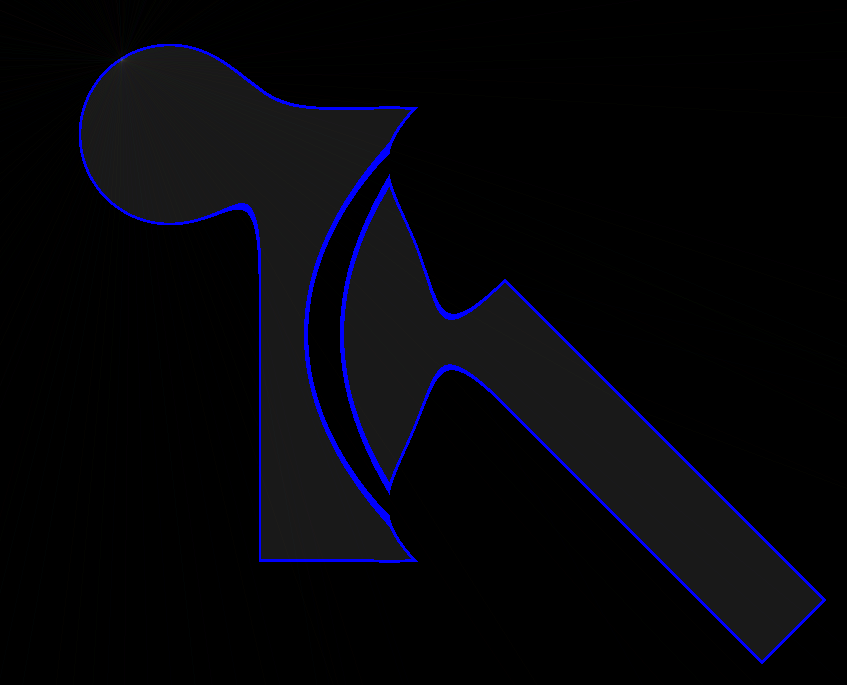
|
References
[1] Bitterli, B. (n.d.). Tantalum - 2D Light Transport: Benedikt Bitterli's Portfolio. Retrieved August 14, 2020, from https://benedikt-bitterli.me/tantalum/tantalum.html
[2] Lague, Sebastian. "Coding Adventure: Ray Marching" YouTube video, 5:05. Apr 2, 2019. https://www.youtube.com/watch?v=Cp5WWtMoeKg.
Contribution
Zijin Cui
I worked by myself and wrote most of the code using the SFML library and GLM. I have used formulas online to write the cubic solver function, and I have also sampled the wavelength to color binning from online forums. But other than those, I did the project in it's entirety, write the report and the presentation in the past two weeks.